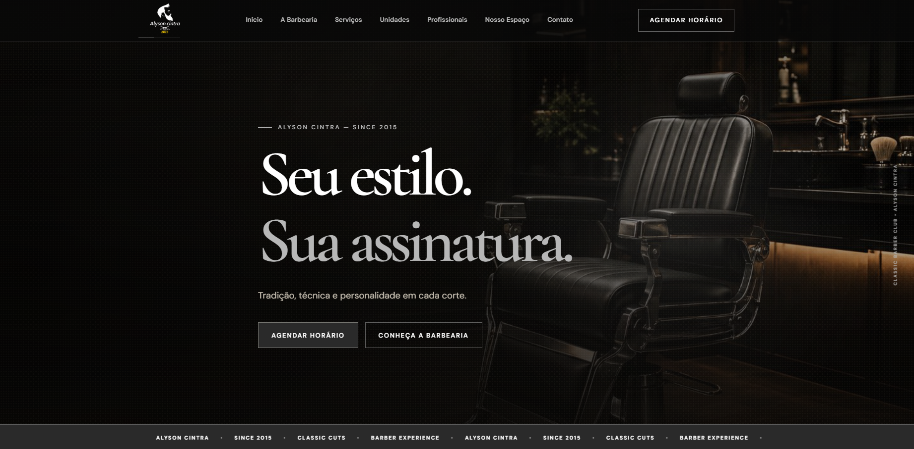
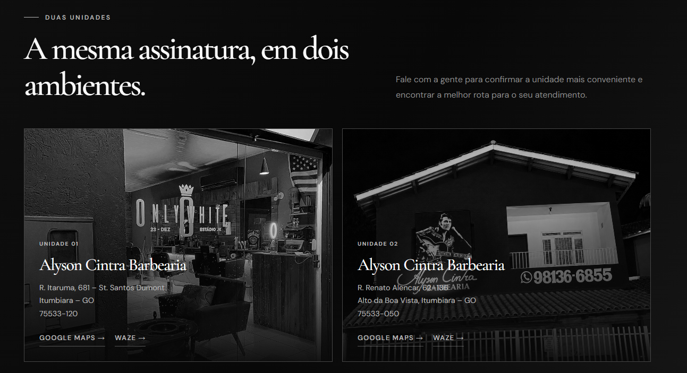
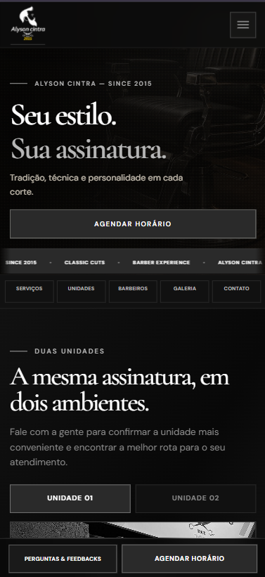

O desafio
Traduzir a atmosfera premium da barbearia em uma presença digital clara, capaz de mostrar serviços, equipe e unidades sem criar atrito.
Site institucional desenvolvido para apresentar o clube, orientar a descoberta de serviços e deixar o agendamento acessível em desktop e mobile.
Traduzir a atmosfera premium da barbearia em uma presença digital clara, capaz de mostrar serviços, equipe e unidades sem criar atrito.
Usar uma hierarquia editorial forte e ações diretas para equilibrar identidade visual, leitura e o caminho até o agendamento.
Manter os elementos essenciais acessíveis também no celular, onde o usuário pode consultar serviços e iniciar o contato rapidamente.
As telas mostram uma navegação pensada para apresentar a marca e encurtar a distância entre interesse, localização e agendamento.

A home apresenta a proposta da barbearia e mantém as chamadas de agendamento e descoberta sempre visíveis.

As duas unidades são apresentadas em blocos comparáveis, com endereço e caminhos para navegação, ajudando o cliente a decidir onde será atendido.

A versão mobile reorganiza navegação e conteúdo para touch, sem perder o acesso a serviços, unidades, contato e agendamento.
Tipografia, contraste e fotografia reforçam uma assinatura visual própria.
A navegação organiza o acesso a serviços, equipe, espaço e unidades.
A experiência continua clara e utilizável entre desktop e mobile.
O agendamento e os caminhos de localização aparecem nos pontos de decisão.
Quer conversar sobre experiências digitais e interfaces responsivas?
Entrar em contato